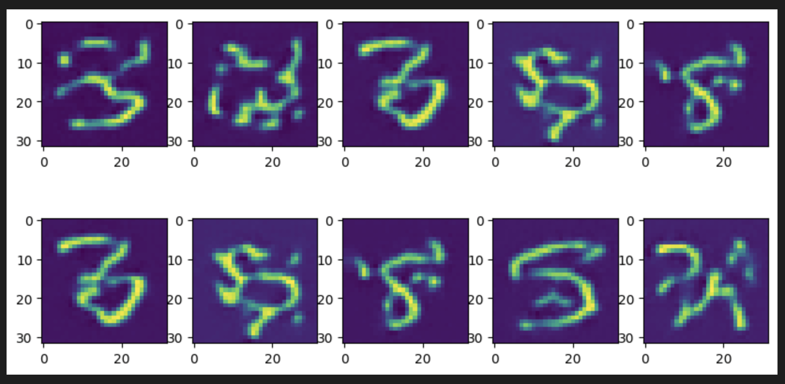
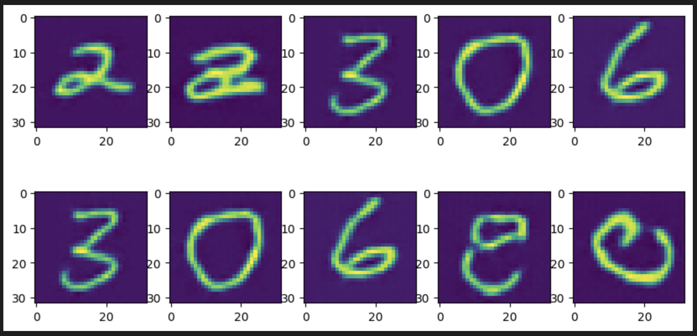

Carbonate Account Setup, Experiment, Debug and Repeat: Week 5#
What I did this week#
I finally got my hands on IU’s HPC - Carbonate & Big Red 200. I quickly set up a virtual remote connection to Carbonate’s Slate on VS Code with Jong’s help. Later, I started looking up on Interactive jobs on Carbonate to have GPUs on the go for coding and testing. I spent a ton of time reading up on Carbonate’s Interactive SLURM jobs information. Using X11 forwarding, I was able to spin up an interactive job inside the login node using command prompt. It popped up a Firefox browser window from the login node ending up slow and not very user friendly. Same goes for the Big Red 200 as well. Eventually my efforts were in vain and I resorted to installing a jupyter notebook server on my home directory. Although I can’t request a GPU with this notebook, it allows me to debug syntax errors, output visualization, plotting loss values etc.
Continuing on my MNIST experiments, I ran into Multi Distribution issues while training the unconditional Diffusion Model(DM). Without getting into too many details I can summarize that having a custom train_step function in tensorflow, without any default loss reduction such as tf.reduce_mean or tf.keras.losses.Reduction.SUM, requires more work than model.fit(). So, my current loss function used for training DM is reduced on the last channel while the rest of the shape of each batch is kept intact. When using distributed training, tensorflow requires the user to take care of gradient accumulation if it’s an unreduced loss. So, I tried to learn from Tensorflow tutorials. Alas, all their multi distributed strategy examples were based on functional API models whereas my approach is based on object oriented implementation. This led to design issues. For the sake of time management, I did a little bit of tweaking. While compiling the model under tf.distribute.MirroredStrategy, I passed tf.keras.losses.Reduction.SUM parameter to the loss function and divided the loss by a pre-decided factor which is np.prod(out.shape[:-1]) i.e., number of elements in the output shape excluding the last channel which is reduced in the loss function. This tweak worked and also does not have any unexpected impacts on the architecture as well as the training paradigm.
I followed the architecture described in my previous blog for the DM. I trained this on VQ-VAE latents of MNIST dataset for 200 diffusion steps, 2 Nvidia V100 GPUs, Adam Optimizer with 2e-4 learning rate, 200 batch size per GPU for 100+ epochs. For the generative process, I denoised random samples for 50, 100 and 200 steps on the best performing model(112 epochs). Here are the results I achieved -
{kind=link}
We see some resemblance of digit shapes in the generated outputs. On further training for 300 diffusion timesteps for the best performing model( 108 epochs) with least training loss, the visuals have improved drastically -
{kind=link}
These outputs show the effectiveness of the model architecture, training parameters and the codebase.
What Is coming up next week#
Work on T1 weighted MRI datasets on modified 3D conv code. Hyperparameter tuning for the best results. If time permits, work on the FID evaluation metric.
Did I get stuck anywhere#
Most of the work conducted this week included setting up the environment, debugging, researching documentation. For the rest of the little time, I ran experiments. Having the code ready, both VQ-VAE and DM, before I got hold of GPUs, helped me save a lot of time. This week’s work imparted a great learning experience for me.